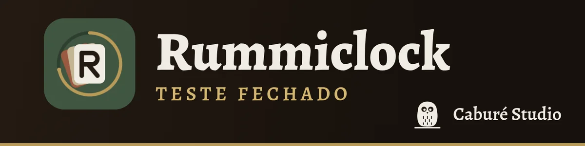
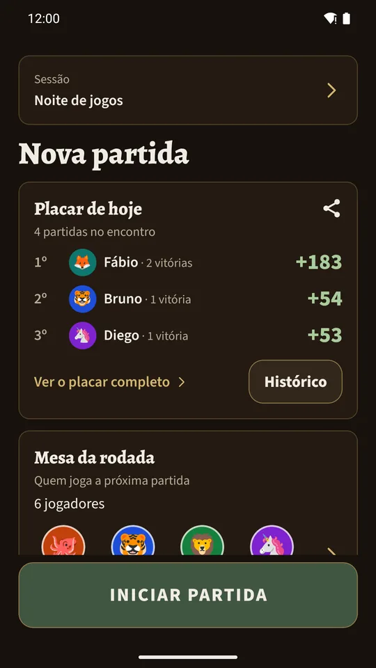
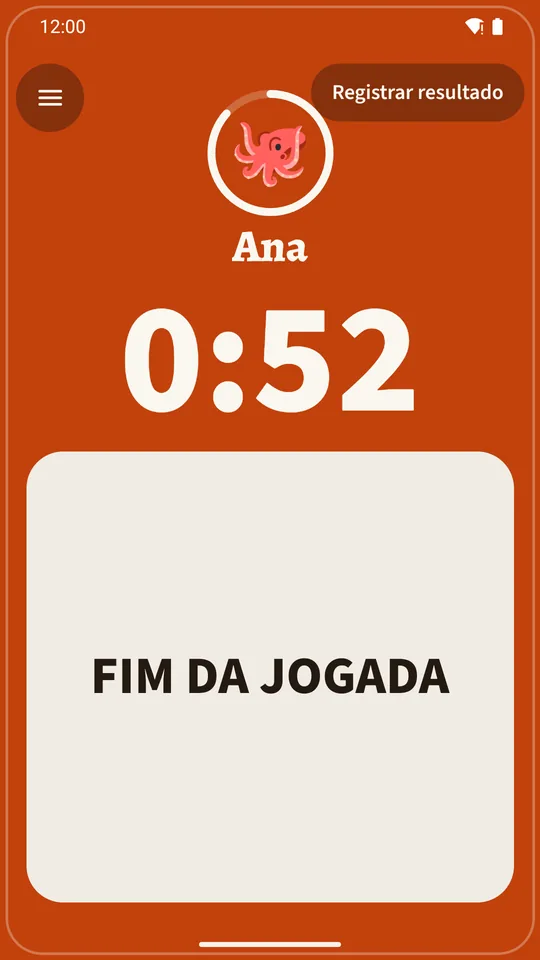
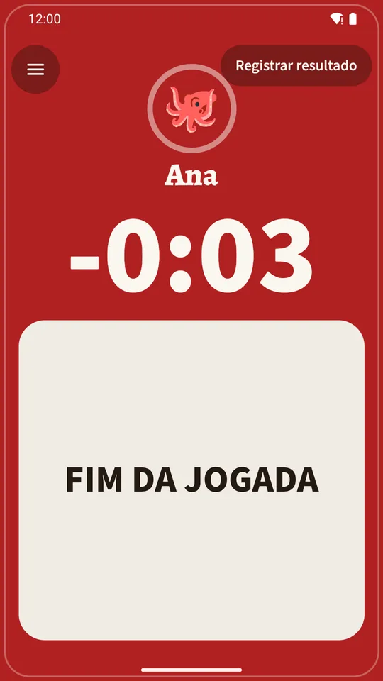
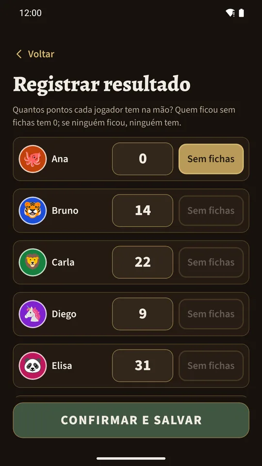
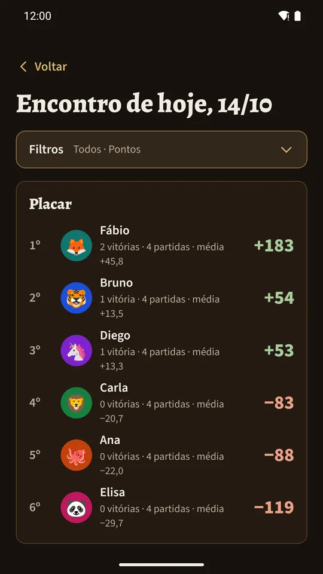
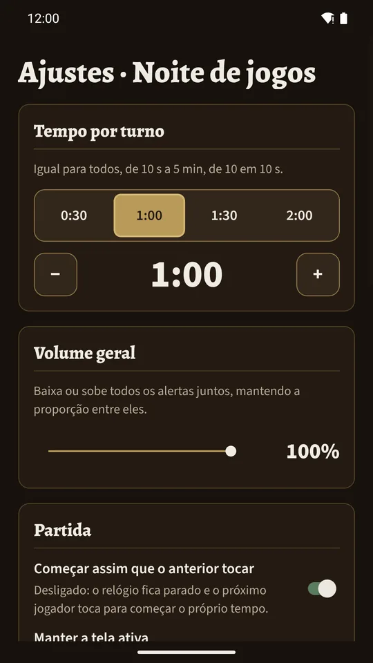

Testar o Rummiclock
Obrigado por ajudar a testar o Rummiclock! Antes de publicarmos o app na Play Store, o Google exige que um grupo de pessoas o teste por 14 dias. Você só precisa de um celular Android e de uma conta Google (a mesma do Gmail e da Play Store).
Quero testarSobre o app
O Rummiclock é o cronômetro de turnos e o placar do seu grupo de jogos de mesa.
- Cronômetro de turno com avisos.
- Cadastro de jogadores (até 16), com nomes e avatares, e a mesa de cada rodada com a ordem dos turnos.
- Sugestão de rodízio: quem sai e quem entra na próxima rodada.
- Registro de cada partida e dos pontos.
- Encontros, histórico e ranking do encontro, do mês e geral, com estatísticas de tempo.
- Compartilhe o placar como imagem (ideal para o WhatsApp) ou exporte as partidas em CSV.
- Backup em arquivo para guardar ou levar seus dados para outro aparelho.
- Em português, inglês e espanhol.
Sem conta, sem anúncios e sem internet: tudo fica no seu aparelho. O app não coleta nem envia dados.
Como ele é






Como participar
1Peça seu acesso
Informe seu nome e o e-mail da conta Google do seu celular. Liberaremos o seu acesso em até 1 dia.
Pedir acesso2Aceite o convite
Quando o seu acesso for liberado, enviaremos o convite por e-mail ou WhatsApp. Abra o link no celular e toque em “Tornar-se testador”.
Em breve: avisaremos quando abrir3Instale e use
Toque em “Instalar” na Play Store e abra o Rummiclock. Use algumas vezes nos próximos 14 dias, por exemplo numa noite de jogos com os amigos.
4Conte o que achou
Durante e depois dos 14 dias, conte-nos como foi: o que funcionou, o que atrapalhou e o que você mudaria. Leva cerca de 2 minutos, e você pode responder mais de uma vez.
Em breveDúvidas comuns
Não tenho Android
Infelizmente o teste é só para celulares Android.
Apareceu “app não encontrado” ou “indisponível”
Confira se você está logado no celular com o mesmo e-mail que nos informou. Se estiver, espere algumas horas e tente de novo: o Google demora um pouco para liberar.
O que o app faz com os meus dados?
Nada sai do seu celular. Seu e-mail e seu WhatsApp só são usados para liberar o teste e avisar você. Veja a política de privacidade.
Quero sair do teste
Pode sair quando quiser, é só nos avisar. Se puder, fique até o fim dos 14 dias: ajuda muito.
Caburé Studio · tiraco@outlook.com